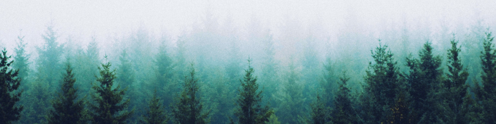
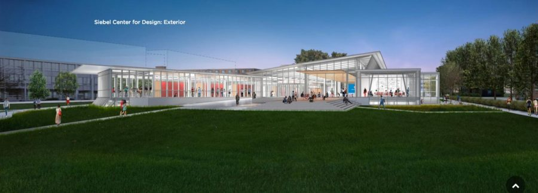
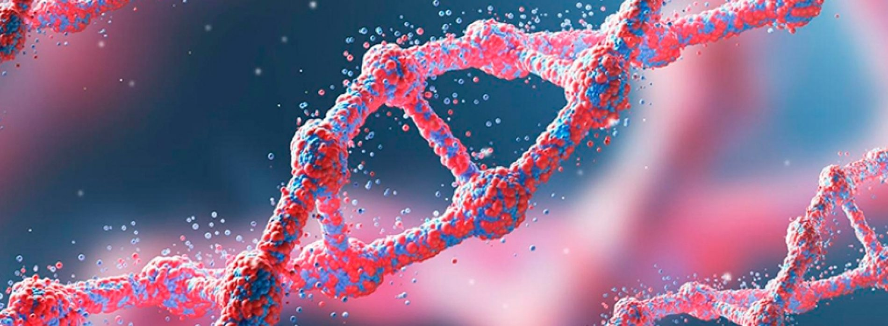

Gabe Tavas is a biodesigner, entrepreneur, and explorer who develops technology and communities with the mission of enabling a world where anyone can make anything from anywhere sustainably. To explain what that means, his projects are titled with four themes: harvest, immerse, inspire, and collect.
HARVEST — Novel Printers
As the founder of Novel Printers, Gabe is hyper-concerned about deforestation and the threat it poses to the planet at a time of accelerating climate change. At the same time, as someone who grew up tinkering in 'makerspaces' and studios in Chicago, he has a deep appreciation for craft and human ingenuity — especially when it comes to carpentry. So looking out for the best of the both worlds, the goal of Novel Printers is to develop manufacturing processes that allow creators to replicate and form all types of wood without cutting down any trees. That way, artists can continue to make, and the planet can begin to recover.
Recently, Novel Printers submitted a guideline to the Xprize Foundation that outlined how a global, multi-million dollar competition to develop alternative wood products might be organized. The guideline was one of six winning entries to be picked among hundreds more that were submitted from across the world as part of a pre-competition organized by Xprize. The prize money Novel Printers received is now being used to further develop a research and biomaking space based in the Urbana-Champaign Community Fab Lab.
IMMERSE — Urban Rivers
As a non-profit focused on environmental innovation, Urban Rivers has been installing floating gardens of native plants on the long-polluted Chicago River as part of a "Wild Mile Initiative" to revitalize the river habitat along the east side of Goose Island. After the first garden modules were installed, Gabe joined as a volunteer and eventually became a key designer and builder of one of Urban Rivers' boldest projects, the Trashbot, which is a robot anyone can control online to remotely collect trash on the river. His involvement especially escalated towards the summer of 2019, when he and the rest of the Trashbot team began rapidly building prototypes that were tested on the Chicago River and featured on the Chicago Tribune, ABC News, and Chicago Magazine. Before the summer is up, the goal is to install a robot that the public will be able to control on a 24/7 basis.
INSPIRE — Siebel Center for Design
The Siebel Center for Design is a community (and, more literally, a building) based at the University of Illinois at Urbana-Champaign — where Gabe studies — that promises to mix different majors of students together as they collaborate on human-centered design challenges and become increasingly conscious of how they can make a real impact on global challenges. It will be the hub of interdisciplinary thinking on campus, and Gabe’s role on the center’s team is to advise on facility management and foster partnerships with other labs, studios, and makerspaces.
COLLECT — Earth Biogenome Project
When it comes to combining design with biology, artists and scientists are always in search of the next source of inspiration, whether that is a cool animal, a nifty plant, or a resourceful fungus. And yet, mankind has discovered and catalogued just a tiny fraction of the lifeforms that are believed to exist on Earth — leaving it with an incomplete toolkit and running the risk of losing these organisms altogether as environmental pressures escalate. So the “moonshot” mission of the Earth Biogenome Project is to sequence the genomes of every eukaryotic organism on the planet in ten years as a means of study, conservation, and innovation. For his part, Gabe hopes to study and collect specimens for sequencing and help present the DNA database in an engaging way to the public.